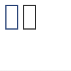

stroke
stroke(r, g, b, a=1.0)
stroke(h, s, b, a=1.0)
stroke(c, m, y, k, a=1.0)
stroke(k, a=1.0)
stroke(color)
Sets the current stroke color. The stroke color is used to draw lines around shapes, paths and text. All shapes, paths and text following this command will be outlined in this stroke color. The color is either specified in terms of RGB, HSB or CMYK depending on the current colormode(). Each RGB, HSB or CMYK parameter ranges between 0.0 and 1.0. The default colormode is RGB. The last parameter is optional and sets the alpha (opacity) value. Additionally, stroke() can be called with just one parameter that sets the gray value, or with the color value returned from the color() command.
 |
nofill()
stroke(0.2, 0.3, 0.5)
rect(10, 10, 20, 40)
stroke(0.3)
rect(40, 10, 20, 40) |